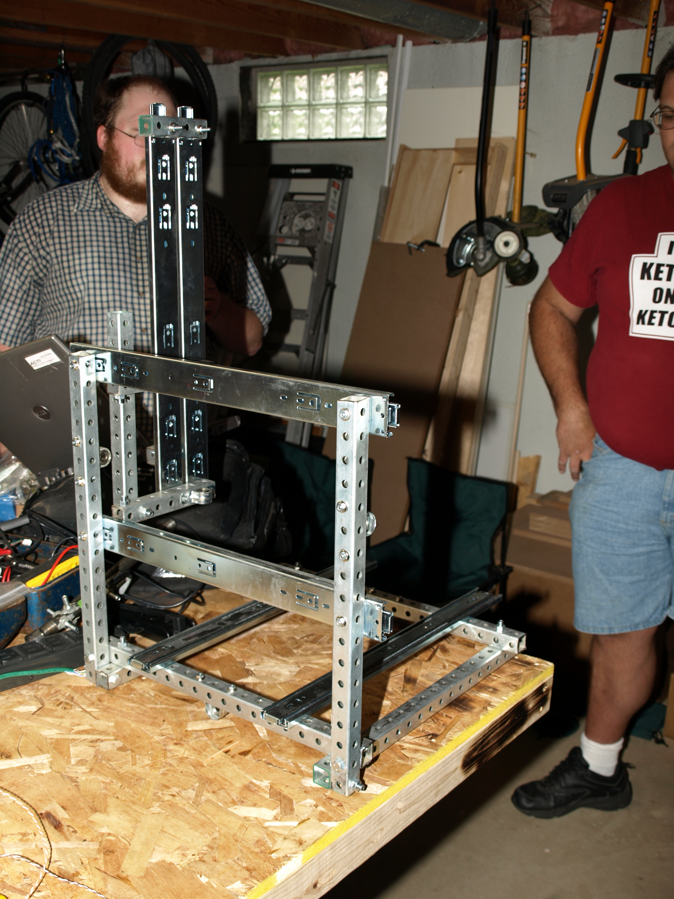
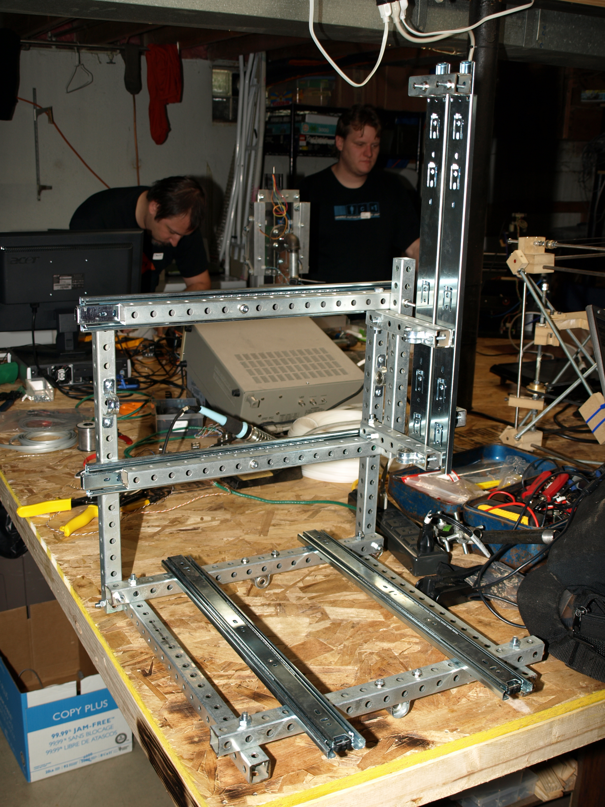
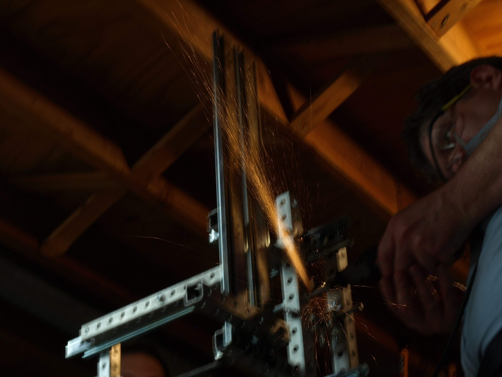
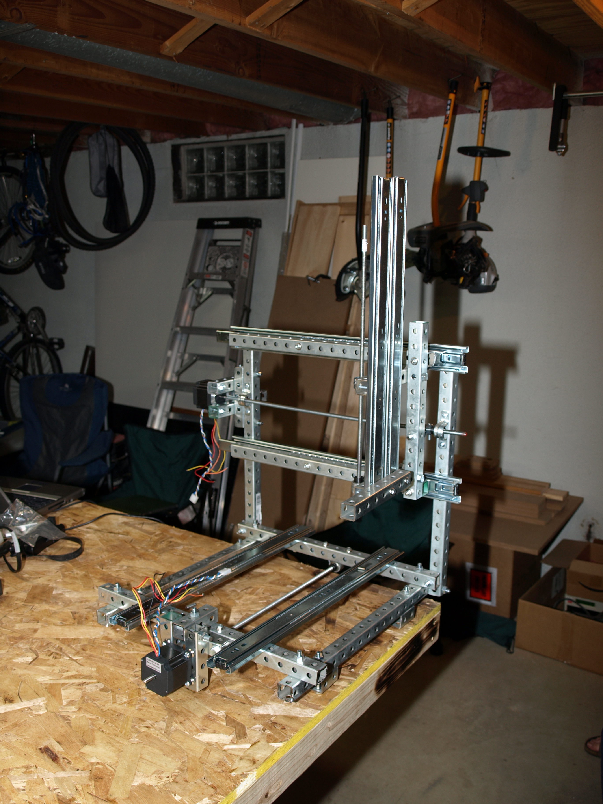
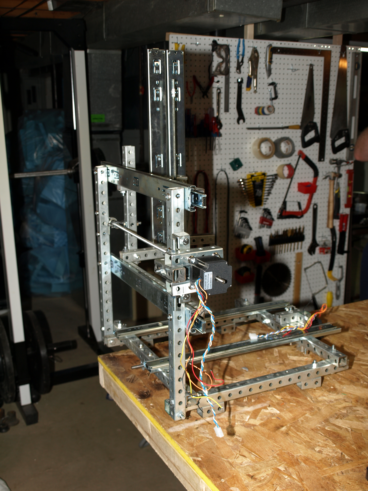
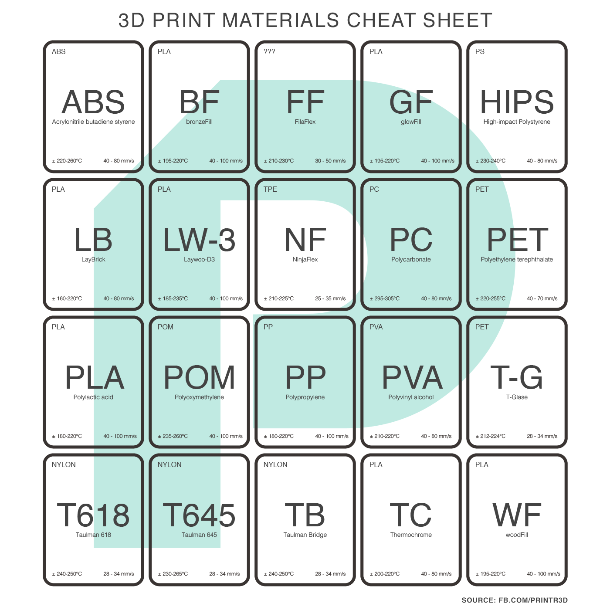

3d printers revision 6941
^ Projects infobox ^^
| image | Eiffel_Concept.jpg |
| designer | [[user:tim|Timothy Schmidt]] |
| date | 2013 |
| vitamins | |
| materials | |
| transformations | |
| lifecycles | |
| tools | [[wrenches|Wrenches]] |
| parts | [[frames|Frames]], [[nuts|Nuts]], [[bolts|Bolts]], [[plates|Plates]], [[end_caps|End caps]] |
| techniques | [[shelf_joints|Shelf joints]], [[tri_joints|Tri joints]] |
| stl | |
| git | |
Introduction
3D printing, or additive manufacturing, is the construction of a three-dimensional object from a CAD model or a digital 3D model. The term "3D printing" can refer to a variety of processes in which material is deposited, joined or solidified under computer control to create a three-dimensional object, with material being added together (such as plastics, liquids or powder grains being fused together), typically layer by layer.
Challenges
Subtractive manufacturing can produce many goods - particularly with multi-step production processes and multiple parts. But some objects can't be made that way. Others are simpler and faster to manufacture in a single operation additively.
Chatter
We need to turn this into a machine with a stationary bed and mobile gantry if we're to extend it into use as a powder printer.
This is conceptually straightforward, if we can do a dropping bed and borrow candyfab's or someone else's powder mechanisms.
Approaches
FDM
Eiffel







Eiffel is a proposal for a post-Mendel RepRap, which will function as a 3D printer, and as a CNC Router.
The first version will have a footprint of ~1 ft x 2 ft (30 cm x 60 cm), and a workspace of
8.5 inch x 11 inch x 4 inch, or 20 cm x 30 cm x 10 cm.
Eiffel is made from a number of square beams bolted
toghether in TriLap joints. These square beams are either steel tube,
aluminum tube, or solid wood, depending on availability and user
preference. The beams are drilled for bolting together in tri-joints.
If convenient, these beams are drilled with regularly spaced
through-holes along each long side. (See RBS).
We aim to supersede Mendel by being able to engrave and drill pcbs,
and also machine wood and non-ferrous metals. Eiffel will also be
useful for hybrid fabrication. This is essential for making Gears.
Structure
Beam
1x1 inch, cost ~$22 per 6ft piece.
''The preliminary concept sketch seems to show (very roughly) about 32 feet of beam, requiring 6 of these 6 ft pieces.''
''The photos seem to show (very roughly) about 16 feet of beam, requiring 3 of those 6 ft pieces -- is that really all that is required, or were those photos taken halfway through construction?''
square steel tubing or square wood beams.
If possible, these are perforated and otherwise shaped using the mom-Eiffel, or a handy drill press.
Cross-Connectors, Fasteners
3D printed by the 'Mom' Eiffel or RepRap, or made by cnc router,
or laser cutter.
''Huh? Once you put the 3 bolts through the tri-lap joint, and tighten the nut against the washers, what other connector or fastener do you need?''
Material
*Thermoplastic or
*Filled Epoxy (Using a CNC router and a 3D printer to make the molds
for the fittings, and then using the molds to cast fittings from filled epoxy.)
Spindel
*Taig Spindle
or
http://www.engravingmachine.com/html/router_spindles.html
e.g.
http://www.engravingmachine.com/html/router_spindles_-_kress.html
Replimat printer
Use linear bearings, motors, and a controller to build a 3D printer. A hotend designed to consume plastic pellets instead of filament allows for direct recycling of shredded plastic goods.
Polymer recycling codes for distributed manufacturing with 3-D printers
Workflows
- All in one 3D printer test print
- RetractionCalibration.com
- Smart compact temperature calibration tower
- Arc welder Octoprint plugin
<youtube>8_adY2K-YIc</youtube>
<youtube>WjxMA4CkUZc</youtube>
Files/Modeling
Eiffel is still in preliminary development. We currently have the 'napkin-sketch' above, a Blender file or two (available tomorrow), and a number of graph paper sketches.
Please use your favorite modeling program or CAD program and join in!
Applications
*Drilling steel or aluminum beams for daughter-Eiffels. (We may have to set up in a CNC Mill configuration to drill steel.
*PCB routing
*Hobby-scale Robot parts (CNC-routed and 3D printed)
User wants and needs: Journeyman (just graduated)
architecture student, who will need CNC router/3D printer for
modelmaking and crafting.
Also: FabLabs, RepRap users, hobbyists (RC plane folk cut a lot of
balsa on medium scale CNC routers) and educators.
Design Philosophy
The RepRap project has successfully made a 3D printer
using the GPL for a license. Eiffel will do the same, and will
leverage and contribute to RepRap technology and community. We will
use the GPL and the RepRap website to be able to freely interoperate with
standard RepRap hardware and software.
There is no mature and well-publicized GPL CNC router. Eiffel
will fill that space, along with being a CNC-router.
Working Notes
Everything below here is poorly organized. Sorry.
'''Capabilities'''
*Work volume of 24" x 48" x 8".
*Wood cutting - ~100% duty cycle.
*Metal cutting - light aluminum and other non-ferrous cutting.
*Steel - drilling.
*3D printing:
1) Thermoplastic: like a normal RepRap
2) Powder Printer: Preliminary discussion.
http://dev.forums.reprap.org/read.php?1,31168,31181
Fabrication/Tooling
To make an eiffel from square tubing or beam, drilled for bolting together in tri-joints. It
will _not_ require a normal machine shop.
Saw
Drill Press
???
Maybe benchtop CNC mill for fittings, but would greatly prefer having mother Eiffel
or other cnc router, 3D printer make fittings from Filled Epoxy.
Self-replication
'''Does it drill holes in the beams of it's daughter machines?''' You
can.
But for the first one, it's much much faster to source pre-drilled
square steel beams. McMaster-Carr down in the US has it, and local
construction suppliers _everywhere_ should be able source it given 2
months forewarning.
http://www.mcmaster.com/#steel-structural-tubing/=49tu63
Once you've got a machine, it's really easy to make lots of wood grid
beam. And maybe you can drill holes in steel with it. It would be
convenient, and a useful target benchmark. It would be hard to make
this as good as a Taig Mill, but fun to try.
normal CNC routing
'''How do we generate G-Code from for cutting the outsides of
stuff. You know, 80% of normal CNC routing?'''
Perhaps use one of the "2D" packages listed at Useful Software Packages,
and if it doesn't directly produce G-code, use something like Builders/Replath
to convert from SVG or DXF to G-code?
References
- BrickRap 3D printer
- Eiffel 3D printer
- Railcore RepRap 3D printer
- 3D Chameleon multi-filament loader
- Scan the world
- Process planning for five-axis support free additive manufacturing
- 5 Axis Maker
- Appropedia: Open source metal 3D printer
- Village Plastics
- Github: GoSlice - 3D model slicer
<youtube>w3i8i-9bjqI</youtube>
<youtube>YcuMTrCLoJ8</youtube>
<youtube>XVoldtNpIzI</youtube>
<youtube>rp3r921DBGI</youtube>
<youtube>nRLJ4ylGTFc</youtube>
<youtube>vSwumoSlZTo</youtube>
<youtube>ESSYNRm5MjI</youtube>